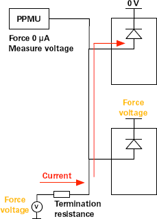

SharedContinuity test method
The SharedContinuity test method checks the DUT, verifies test signal continuity and checks for short circuits. It checks shared, non-shared and cross-terminated pins in a single pass.
If you require greater control over test details than this test method offers, you can also develop your own shared continuity test method with either the SHARED_CONTINUITY_TEST API, or MTP_CONTINUITY_TASK API.
For the detailed differences between the three methodologies, see MTP_CONTINUITY_TASK.
Test methodology
The test method uses this algorithm to check the DUT:
- It disconnects digital pins and connects power supplies.
- It sets all DPS termination voltages to the same value and activates all power supplies.
- Individually for each shared site:
- It optionally unshares the power supply for the DUT by executing the continuity command from the utility control section.
- It sets the DEVICE_SUPPLY power of the position under test to 0 V.
- It performs the measurement, which varies by the type of pin:
- Shared pins: Force the voltage on the FORCE_SUPPLY DPS and measure the forward bias voltage of the positive input diode on the shared channels of the position under test with the PPMU.
- Non-shared and cross-terminated pins: Using the PPMU, force current and measure voltage.

- Reset the DEVICE_SUPPLY DPS power of the position under test.
- If the utility lines were changed in step 1, execute the default command of the utility control section.
- Disconnect.
Functional changes
- Introduced in MTP 3.0.1
- MTP 3.1.3: New API SHARED_CONTINUITY_TEST is introduced for developing a customized test method.
- MTP 3.1.5: New API MTP_CONTINUITY_TASK is added.